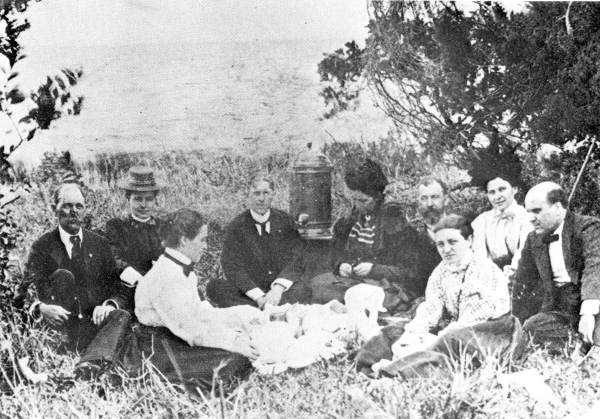

Chapter 12
The Red Cross Camp on the Conemaugh
The machine had begun its work. Its first act was to decide what a person needed.
On a hillside above Johnstown, in the first week of June 1889, Clara Barton stood inside a canvas tent and directed the distribution of clothing to survivors. She had arrived from Washington. She carried no statutory authority. She held no commission from the Commonwealth of Pennsylvania. Her presence was her mandate. Her reputation was her warrant. She walked among the ruins. She spoke to people who had lost everything. She decided what they received.
Three hundred yards away, in a borrowed railroad office, a clerk for the Pennsylvania Relief Commission sat at a table. He opened a ledger. He ruled columns across the page. He wrote a date at the top. He wrote a name in the first row. He wrote the number of people in the claimant’s household. He wrote the category of loss. He wrote the amount authorized. He turned the page. He began again.
Two authorities. Two methods. One decided by presence. The other decided by paper. Between them, in the weeks that followed, the relief effort hardened into an institution in its own right: a temporary government of the valley that decided who counted as a sufferer and what a sufferer deserved.
The Pennsylvania Railroad restored service to Pittsburgh, fifty-five miles to the west, by June 2. Food, clothing, medicine, and other provisions began arriving by rail. Morticians traveled by railroad; Johnstown’s first call for help had requested coffins and undertakers. The demolition expert ‘Dynamite Bill’ Flinn and his 900-man crew cleared the wreckage at the Stone Bridge, carted off debris, distributed food, and erected temporary housing. At its peak, the army of relief workers totaled about 7, 000. The town needed the dead buried before the living could be housed. The railroad brought both. It brought supplies to sustain the living and boxes for the dead on the same tracks, in the same trains, to the same depot.
Barton’s Red Cross established its camp on the flats near the Conemaugh. The location sat close to the destruction. Tents went up on ground that the flood had covered two days earlier. Mud still softened the footing. The river still ran high.
Barton chose proximity over safety. She wanted the camp visible. She wanted survivors to walk to it without crossing the entire town.
The camp grew to several dozen tents. It housed volunteers. It stored supplies. It served as a distribution point for clothing, bedding, and tools.
Barton walked through the camp each morning. She spoke to the volunteers. She spoke to the survivors who lined up outside.
She carried the authority of a woman who had been at Antietam, who had been at the Franco-Prussian War, who had persuaded the United States Senate to ratify the Geneva Convention. That authority needed no vote. It needed no appropriation. It needed only her presence, and she gave it.
The Red Cross camp ran on a simple principle. People needed things; Barton had things; she gave the things to the people. The giving was immediate. A man needed a shovel, and Barton gave him a shovel. A woman needed shoes for her children, and Barton found shoes. The transaction left no ledger, no receipt, no category, no paper trail. Her method was the method of presence. It was fast. It was flexible. By the standards of the commission, it was also unaccountable.
The Pennsylvania Relief Commission had been created by the state legislature. It had statutory authority. It had money. It had the power to spend that money on the relief of sufferers in the Conemaugh Valley. Its members were appointed. Its procedures were formal. Its records were official. The commission did not give a man a shovel. It authorized the purchase of shovels. It allocated shovels to a district. It directed the district committee to distribute the shovels to verified claimants. The claimant signed for the shovel. The signature went into the ledger. The ledger went into the archive. The shovel became a recorded transaction.
The friction between these two methods began within days. Barton wanted speed; the commission wanted accuracy. Barton wanted to give; the commission wanted to document. Barton trusted her judgment of a person’s need; the commission trusted a verified form. The conflict was not personal but structural. Two kinds of authority occupied the same ground. One rested on reputation, the other on the state. Neither could displace the other. Neither could ignore the other. They learned to coexist, and the coexistence produced rules.
The first rule was the list. The commission needed to know who needed help. It could not distribute to a crowd. It needed names. It needed addresses. It needed family sizes. It needed descriptions of loss. The commission directed each district to compile a list of sufferers. The local committees went door to door. They went tent to tent. They went to the shelters where survivors huddled. They asked questions. They wrote answers. They carried the answers back to the railroad office. The clerk entered the answers into the ledger. The list grew. Each name was a row. Each row was a claim. Each claim was a category of loss.
The list was the commission’s first instrument of governance. It turned a crowd of survivors into a population of claimants. It turned need into a documented condition. It turned suffering into a record. The list also created a boundary. A person whose name appeared on the list was a sufferer. A person whose name did not appear was not. The list made the distinction. The distinction made the institution. The institution made the rules.
The second rule was the category. The commission needed to sort the sufferers. It could not treat every claim alike. Some people had lost everything. Some people had lost a house but kept their land. Some people had lost a business but kept their inventory. Some people had lost family members. Some people had lost wages. The commission created categories. There were categories for the destitute. There were categories for the partially destitute. There were categories for the injured. There were categories for the merely ruined. Each category carried a different allocation. Each allocation was a number. The number went into the ledger. The ledger made the category real.
The distinction between the injured and the merely ruined was the commission’s sharpest line. The injured needed medical care; the merely ruined needed building materials. The injured received medicine and bandages and the attention of a doctor. The merely ruined received lumber and nails and a permit to rebuild. The distinction was not cruel but administrative. It was also the first step toward a legal classification that would matter long after the emergency ended. The injured had a bodily claim; the ruined had a property claim. The two claims would travel different paths through the legal system. The commission did not know this. It was sorting sufferers, not writing law. But the sorting was the law’s first draft.
The local committees stood between Barton and the commission. They were the hinge. The committees were made up of Johnstown residents. Some had survived the flood themselves. Some had lost family. Some had lost property. They knew the people who came to them. They knew who had lived where, who had owned what, and the difference between a family that had been comfortable and a family that had been poor. This knowledge was the committees’ authority. It was local knowledge, the knowledge of the street, the neighborhood, the church. Barton did not have it. The commission did not have it.
The committees used this knowledge to verify claims. A man came to the committee. He said he had lost his house on Clinton Street. The committee member knew Clinton Street. He knew the man’s house. He knew the man’s family. He confirmed the claim. He sent it to the commission. The commission entered it in the ledger. The ledger recorded the loss. The loss became a number. The number became an allocation. The allocation became a payment. The payment became a record. The record became evidence.
The committees also used their knowledge to deny claims. A man came to the committee. He said he had lost a store on Main Street. The committee member knew Main Street. He did not remember the man’s store. He asked questions. The answers were vague. The committee denied the claim. The denial went into the ledger. The ledger recorded the denial. The denial became a record. The record became evidence of a different kind. It showed that the system could say no. It showed that the institution had boundaries. It showed that not everyone who asked was a sufferer. The institution decided.
Barton watched this process from her camp. She did not interfere. She did not endorse it. She did not oppose it. She continued to give. She continued to distribute. She continued to operate on presence.
But her camp and the commission’s office were not separate worlds. They occupied the same town. They served the same people. The people moved between them.
A woman received shoes from the Red Cross camp in the morning. She appeared at the commission office in the afternoon. She gave her name. She gave her family size. She gave her address, or what had been her address. The clerk wrote it down. The woman became a claimant.
The shoes she had received from Barton were not recorded. The allocation she received from the commission was.
The two systems met in the same person. The person carried the residue of one system into the other.
The commission did not count the shoes. The Red Cross did not count the allocation. The two records existed side by side. They did not reconcile.
This unreconciled record was the chapter’s central fact. Two authorities governed the valley. They produced two kinds of records. One was personal. One was statutory. One was ephemeral. One was permanent. The statutory record survived. It became the archive. The personal record did not survive in the same form. Barton wrote letters. She wrote reports. She wrote appeals for funds. But the daily transactions of the Red Cross camp, the shoes given, the shovels handed out, the blankets distributed, these were not entered into a ledger with ruled columns. They were acts of presence. They left memories. They did not leave evidence in the form the law would later want.
The commission’s ledger was different. It was built for the law, for the auditor, for the investigator who would come later. Every entry had a name, a date, an amount, a category. Every entry was signed. The ledger was a machine for producing evidence, and it did its work well.
The categories the commission created outlasted the emergency. The distinction between the destitute and the partially destitute became a distinction between total loss and partial loss. The distinction between the injured and the merely ruined became a distinction between bodily harm and property damage. These distinctions shaped the relief effort. They also shaped the legal claims that followed. The lawyers who would later file suits against the South Fork Fishing and Hunting Club would use the commission’s categories. They would argue that a person classified as destitute had suffered a total loss attributable to the dam’s failure. They would argue that a person classified as injured had a bodily claim that carried a higher value. The categories were administrative tools. They became legal tools. The institution’s rules became the law’s framework.
The deferred-maintenance debt of the dam, the accumulated cost of neglected repairs passed from private owners to the public, now found its mirror in the relief ledger. The South Fork Club’s absentee ledger, the private record of dues and dividends maintained by men who never saw the dam in flood, had no entry for the cost of a rebuilt spillway. It had no entry for the cost of a lowered crest. It had no entry for the cost of a patched embankment.
The commission’s ledger had entries for all of these costs. They were not entered as the cost of the dam. They were entered as the cost of the flood.
The cost of the flood was entered as the cost of relief. The cost of relief was entered as the cost of a new house, a new stove, a new pair of shoes, a new coffin. The private ledger stayed balanced. The public ledger grew.
Barton’s camp stayed open through June. The tents stood on the flats near the Conemaugh. The volunteers came and went. The supplies arrived by rail. The distribution continued. Barton grew tired. She was sixty-seven years old. She had traveled from Washington, walked among the ruins, spoken to the survivors, directed the volunteers, managed the camp and the distribution and the Red Cross’s public presence in Johnstown. She did not manage the commission, the local committees, or the ledger. Her authority was the authority of presence. Presence could not be delegated. It could not be scaled. It could not be recorded in ruled columns. It was what it was.

The commission’s authority was different. It could be delegated, and it was. The commission members sat in Philadelphia and Pittsburgh. They did not walk the ruins or speak to the survivors. They sat in offices, read reports, authorized allocations, signed checks. The checks went to Johnstown. The local committees cashed them and distributed the funds. The distribution was recorded. The records went back to the commission. The commission entered them in the ledger. The ledger was the commission’s presence, its proxy, the way the state governed the valley from a distance.
The tension between Barton’s camp and the commission’s office was the tension between two theories of help. Barton believed that help should be immediate. She believed that a person in need should receive what they needed without delay, without forms, without categories. The commission believed that help should be accountable. It believed that a person in need should be verified, categorized, and recorded. Barton’s theory was the theory of charity. The commission’s theory was the theory of administration. Charity was fast. Administration was slow. Charity was generous. Administration was precise. Charity left no record. Administration left nothing but records.
The valley needed both. It needed Barton’s speed. It needed the commission’s precision. The survivors needed shoes today. They also needed a system that would give them lumber next week. The camp and the office provided both. They provided them through different mechanisms. They produced different records. They created different categories of knowledge about the same disaster.
The local committees navigated between the two. They accepted Barton’s presence. They accepted the commission’s procedures. They did both at once. A committee member might walk through the Red Cross camp in the morning to pick up blankets for a shelter. He might sit at the commission’s desk in the afternoon to verify claims. He moved between the two authorities. He carried information between them. He was the human link. He was also the point where the two systems conflicted. Barton told him to take the blankets. The commission told him to record who received them. He did both. The record was incomplete. The blankets were distributed. The names were not always entered. The friction was constant. The work continued.
The work produced an archive. Every claim verified was a record. Every allocation authorized was a record. Every denial was a record. Every category was a record. Every list was a record. The records accumulated. They filled the ledger, the files, the boxes that the commission shipped to Harrisburg. They filled the reports that the commission published. They filled the testimony that the coroner’s inquests would take. They filled the evidence that the lawyers would submit. The archive was the institution’s residue, what remained when the tents came down and the clerks went home.
The archive was also the disaster’s second form. The first form was water; the second was paper. The water destroyed; the paper recorded. The water was gone in an hour; the paper accumulated for months. The water left bodies and wreckage; the paper left names and categories. The water was an act of nature, or an act of God, or an act of negligence. The paper was an act of administration. The administration decided what the water had meant. It decided who had been hurt, how badly, what they deserved, what they received. It decided all of this through the ledger.
The ledger’s categories became the categories of the disaster itself. The disaster was no longer a flood. It was a set of documented losses, a list of names, a set of family sizes, addresses, amounts, categories. The disaster had been converted. It had passed from the physical to the administrative, from water to paper, from experience to record. The conversion was complete by the end of June. The camp was still open. The commission was still meeting. The local committees were still verifying claims. But the conversion was done. The disaster was now a documented case.
The documented case had properties that the physical disaster did not. It could be cited. It could be quoted. It could be entered as evidence. It could be read by a court. It could be read by a legislature. It could be read by an investigating committee. It could be read by a historian. The documented case was portable. The physical disaster was not. The physical disaster existed in the valley. The documented case existed wherever the ledger was read. It traveled. It traveled to Harrisburg. It traveled to Philadelphia. It traveled to Pittsburgh. It traveled to Washington. It traveled to the offices of the American Society of Civil Engineers. It traveled to the courtrooms where the lawsuits would be filed. It traveled on paper. It traveled in the categories that the commission had created.
The categories traveled with it. The distinction between the injured and the merely ruined traveled. The distinction between the destitute and the partially destitute traveled. The list of sufferers traveled. The verified claims traveled. The denied claims traveled. The allocations traveled. The records traveled. The archive traveled. The institution had done its work. It had converted a catastrophe into a case. The case would now be argued.
The Red Cross camp on the Conemaugh was the visible sign of the conversion. The tents stood on the flats. The volunteers distributed supplies. The survivors lined up. The line was the institution’s most concrete image. People stood in line to receive what the institution had decided they deserved. The line was the physical form of the ledger. The ledger was the paper form of the line. The line moved. The ledger grew. The institution governed.
Barton stood outside the tent. The clerk sat inside the office. The local committee member walked between them. The survivor stood in line. The line moved forward. The survivor reached the table. The survivor gave a name. The clerk wrote the name. The survivor gave a family size. The clerk wrote the number. The survivor described the loss. The clerk wrote the category. The survivor received an allocation. The clerk wrote the amount. The survivor signed the form. The clerk turned the page. The transaction was complete. The institution had recorded another case.
The page filled. The clerk turned it. The next name went in the next row. The next family size went in the next column. The next loss went in the next category. The next amount went in the next space. The ledger grew. The archive grew. The case grew. The disaster receded into the paper. The paper advanced into the future. The future would read the paper. The future would argue about what the paper meant. The paper was ready.
The commission’s ledger sat on the table in the railroad office. The office smelled of ink and damp paper. The clerk closed the ledger at the end of the day. He placed it on a shelf. He would open it again in the morning. The ledger would wait. The ledger held the names. The ledger held the categories. The ledger held the amounts. The ledger held the distinction between the injured and the merely ruined. The ledger held the archive. The archive held the case. The case waited for the law.